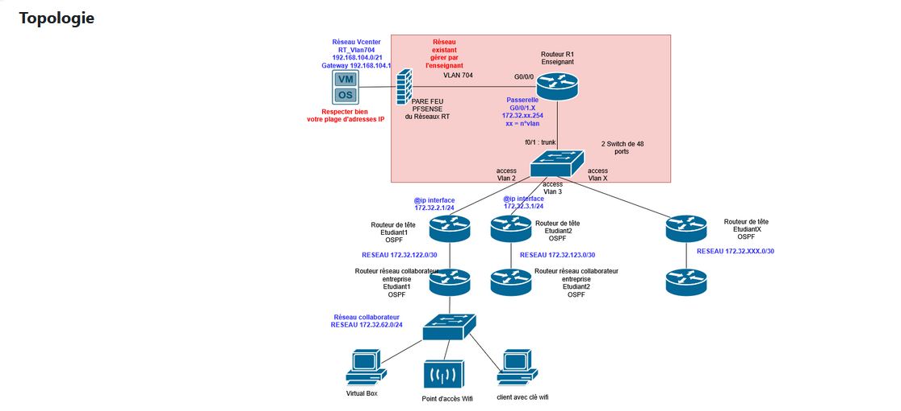

Ingénierie d'une Architecture d'Entreprise Multi-services
Conception, déploiement et sécurisation d'un système d'information complet. Ce projet transversal intègre l'infrastructure de routage, l'administration de domaine, le déploiement de services applicatifs et la supervision globale.
1. Contexte & Objectifs
Ce projet d'architecture visait à concevoir et déployer de bout en bout le système d'information complet d'une organisation. Le défi consistait à ne pas se limiter à l'infrastructure réseau (routage et commutation), mais à y adosser l'ensemble des services systèmes critiques : gestion centralisée des identités, résolution de noms, services d'accès à distance, le tout sécurisé par une authentification forte et monitoré en temps réel.
2. Solutions Techniques Déployées
L'environnement repose sur une synergie étroite entre les couches réseaux et l'administration système :
- Administration Système (AD DS & GPO) : Déploiement d'un annuaire Active Directory hiérarchisé par Unités Organisationnelles (OU). Intégration des postes clients et sécurisation via des stratégies de groupe (GPO) incluant une politique de mot de passe affinée et des restrictions d'environnement (fonds d'écran d'avertissement).
- Services Applicatifs & Connectivité : Mise en œuvre d'un serveur DNS (avec zones de recherche directes et inversées), d'un service Web, et d'un Service de Bureau à Distance (RDS) pour l'administration.
- Réseau & Sécurité Wi-Fi : Configuration de la topologie réseau sous-jacente couplée à un accès Wi-Fi sécurisé. L'authentification des clients sans fil s'effectue via le protocole RADIUS (rôle NPS) en interrogeant directement la base Active Directory.
- Supervision : Intégration d'un serveur Zabbix pour monitorer proactivement l'état de santé de cette infrastructure multiservices.
3. Résultats & Validation
L'interopérabilité entre les équipements Cisco et les serveurs Microsoft/Linux est pleinement fonctionnelle. La centralisation permet de gérer l'intégralité du cycle de vie des utilisateurs, depuis leur connexion Wi-Fi jusqu'à l'application de leurs droits sur les postes de travail.

Sécurité & Annuaire : Structuration des unités organisationnelles et application des politiques de sécurité (GPO) sur les postes clients.

Contrôle d'accès sans fil : Authentification sécurisée des utilisateurs Wi-Fi via le serveur RADIUS (NPS) et l'AD.

Supervision (ITOps) : Déploiement de Zabbix pour monitorer la disponibilité des routeurs et des serveurs critiques.
4. Bilan technique & Expertise acquise
Résolution de défis d'interopérabilité : Le couplage entre la borne Wi-Fi, le serveur RADIUS et l'annuaire Active Directory a représenté le principal défi technique du projet. La gestion stricte des certificats numériques et la configuration fine des politiques réseau m'ont imposé d'analyser rigoureusement la chaîne de confiance pour débloquer les requêtes d'accès.
Approche holistique du Système d'Information : Ce projet m'a apporté une vision globale de l'ingénierie d'entreprise. J'ai assimilé la réalité qu'une bonne maîtrise du réseau (niveaux 2 et 3) reste incomplète si elle n'est pas couplée intelligemment aux briques systèmes (DNS, RDS) et aux exigences de sécurité de production.